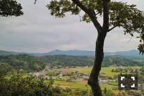

| 2016/11 02 Wed | 斎藤ちはる 朝焼け。 |
ちはるーむへようこそ。
昨日は夕焼けだったけど
今日は朝焼け。
空も海も雲も(見知らぬ)サーファーの方も
凄い絵になる。
この日めちゃくちゃ早起きで
ほぼ目も開いてない状態だったんだけど
この朝焼けを見たら目も覚めたよ。
しばらくしたらこの青空に変わったよ。
ヤシの木？が南国っぽい。
ちょびっと残る雲も好き。
同じ日に撮った写真。
上のは夏っぽいけど
下のは秋っぽい！

どこから見える景色か分かりますか？
難しいかもしれないけど...
ヒントはお城に向かう途中での景色です◎
景色の写真をずっと見ていたい時や
自然に癒されたい時ってたまにありますよね。
今日はそんな日です。
今年も残り２ヶ月。
いま私に出来ることを頑張りたいと思います。
(*´-`)
-------------------------♡
♬ ChihaMusic
「だいだらぼっち」RADWIMPSさん
ふと、この曲を聴きたくなる時が
定期的にやってくる。
中学生の時からずっと。
とにかく歌詞がいい。
みんなが心の奥で思っている事を
代弁してくれていて共感できる。
"一人ぼっちと一人ぼっちが
集まってできたこの世界
寂しいことなんかない
一人ぼっちなんていないよ"
素敵な歌詞。
寂しい気持ちにもなるけど
頑張ろうって思える。
今日放送した真洋のカラオケバトル、
仕事中だったので観られなかったのですが
結果は収録終わった後に聞いていました！
本当嬉しかったな(﹡ˆ ˆ﹡)
真洋凄く頑張ってたから。
もっともっと色んなところで
真洋の歌声が聴けるのを楽しみにしてるね。
今日久しぶりに真洋に会ったら
髪の毛をバッサリ切っていて
とても可愛かった。大人っぽかった。
メンバー間でも話題になりました！
おやすみ〜
斎藤ちはる